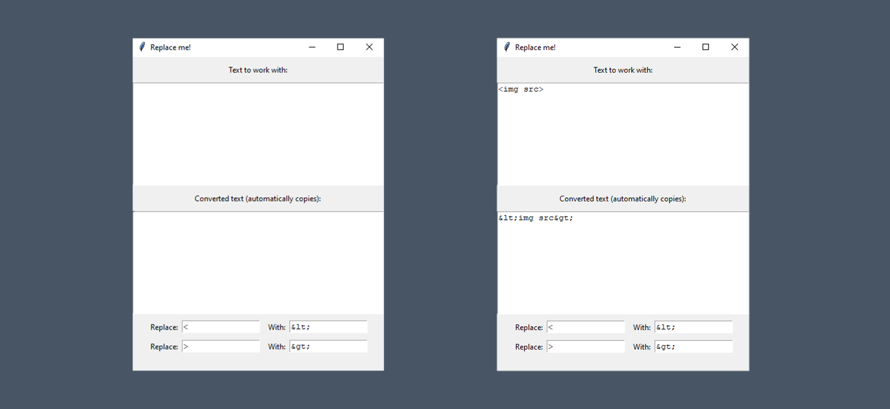

Replace me!
Replace Me! is an intuitive app designed to streamline text replacement. Featuring a 400x500 resizable window, it allows you to enter and transform text effortlessly. Type your text in the upper text box, and specify what to replace and with what in the provided fields. The app instantly shows the converted text in the lower box and automatically copies it to your clipboard. If there's no input for 30 seconds, the text clears, keeping your workspace tidy. Simplify your text replacement tasks with Replace Me!